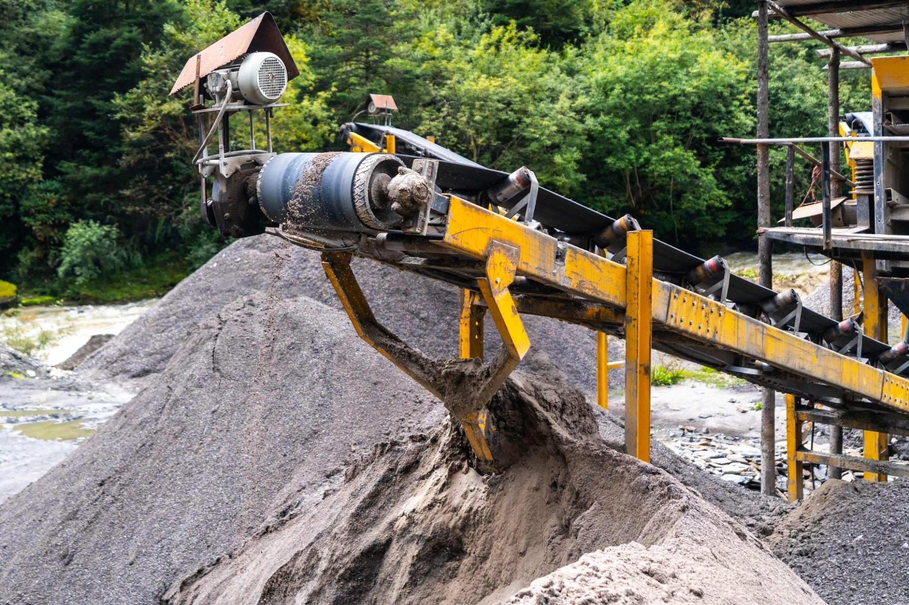

Mining & Quarry Operations
Mining and quarry operations built around disciplined site management, dependable equipment and a clear focus on productivity.
Discuss a project ↗ENGINEERING · EXECUTION · DELIVERY
OVERVIEWCapability in detail.
Capability in detail.
Purpose in every project.
From site preparation to material movement, our mining and quarry operations focus on coordinated work, dependable systems and practical site execution.
Our approach is grounded in understanding the site, setting clear priorities, coordinating resources and maintaining a steady focus on quality, safety and delivery.
KEY CAPABILITIESReady for the
Ready for the
work ahead.
We focus on the practical requirements of each project and the details that keep execution moving.
01
Mining
02
quarry development
03
excavation
04
earthmoving
05
material handling and site operations.

OUR DELIVERY APPROACHClear priorities.
Clear priorities.
Coordinated action.
Understand the requirements, plan the work, execute with discipline and deliver with accountability. Our approach keeps teams aligned and progress purposeful.
01 Understand02 Plan03 Execute04 Deliver